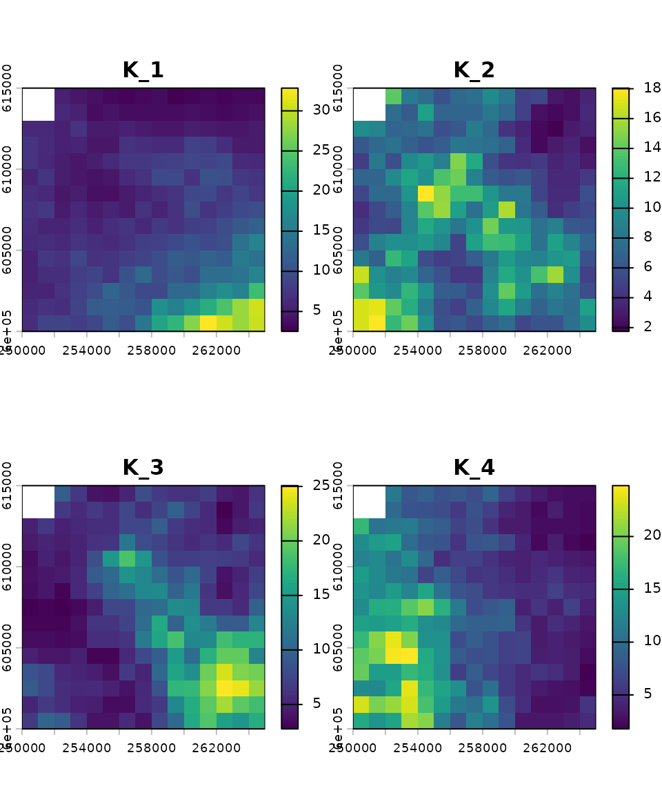
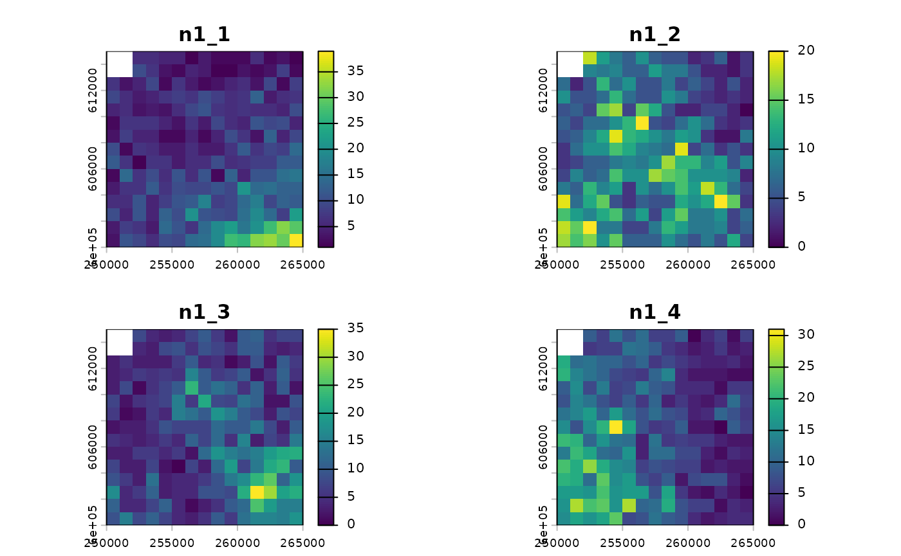
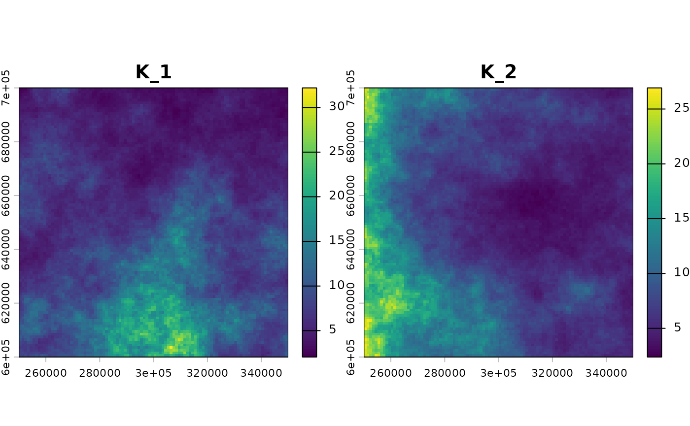
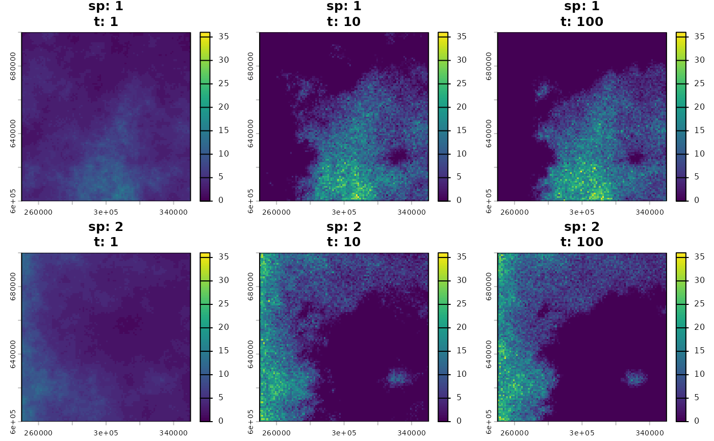
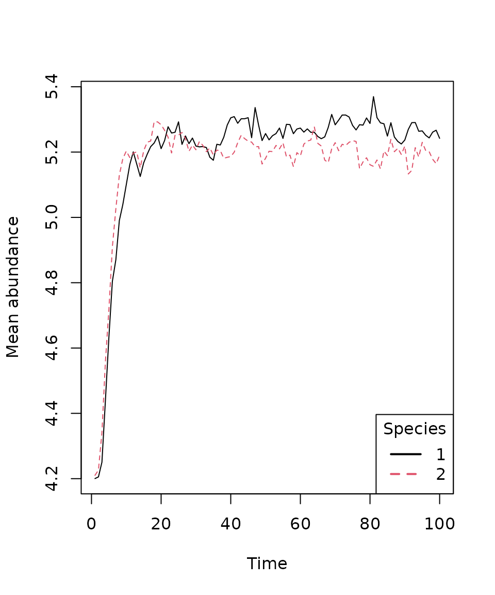

How to use mrangr?
Katarzyna Markowska
08-02-2026
mrangr.RmdAbout mrangr
This vignette demonstrates the main workflow of the
mrangr package, which is designed to simulate
metacommunities within a spatially explicit, mechanistic
framework. The package builds upon the functionality of our
earlier rangr package (https://github.com/ropensci/rangr), which focused on
simulating single-species population dynamics with dispersal.
mrangr extends this by adding the ability to include
multiple interacting species via an asymmetric
interaction matrix, allowing for the flexible modelling of any
type of biotic interaction.
Basic workflow
This vignette shows how to:
Create a virtual community.
Run a simulation.
Visualise results.
Collect virtual ecologist data.
Installing the package
The first step is to install and load the mrangr
package.
install.packages("mrangr")
library(mrangr)Since the maps on which the simulation takes place must be in the
SpatRaster format, we will also install and load the
terra package to make them easier to manipulate and
visualise.
install.packages("terra")
library(terra)Input maps
One of the required inputs is a set of maps that specify the
abundance of each virtual species at the start of the simulation
(n1_map), as well as carrying capacity maps for all species
in the community (K_map). We have provided some examples of
these in mrangr. You can find more information about these
datasets in the help files:
?K_map_eg.tif
?n1_map_eg.tifNow, let’s load and plot these maps.
# Carrying capacity
K_map_eg <- rast(system.file("input_maps/K_map_eg.tif", package = "mrangr"))
plot(K_map_eg, main = paste0("K_", names(K_map_eg)))
# Initial abundance
n1_map_eg <- rast(system.file("input_maps/n1_map_eg.tif", package = "mrangr"))
plot(n1_map_eg ,main = paste0("n1_", names(n1_map_eg)))
Both of these rasters have four layers. This means that they are ready for simulations involving four species, with each layer representing either the carrying capacity or the initial abundance of a species. The order of the layers is crucial and must be consistent across all simulation parameters (e.g., species 1 corresponds to the first layer in the input maps, the first row and column in the interaction matrix, and so on).
To begin, the input maps are generated using the
K_sim function, which creates spatially autocorrelated
rasters (e.g., representing carrying capacity). Subsequent steps require
the user to specify the number of species and supply a
template raster to define the simulation’s spatial
extent and resolution.
# define species number
nspec <- 2
# define map dimensions
nrows <- ncols <- 100
# prepare template raster
xmin <- 250000; xmax <- xmin + nrows * 1000
ymin <- 600000; ymax <- ymin + ncols * 1000
id <- rast(nrows = nrows, ncols = ncols, xmin = xmin, xmax = xmax, ymin = ymin, ymax = ymax)
crs(id) <- "epsg:2180"
id
# generate autocorrelated carrying capacity maps
K_map <- K_sim(n = nspec, id, range = 5e5, qfun = qlnorm, meanlog = 2, sdlog = 0.5)We generated a raster with two layers. Each layer represents the carrying capacity map for a given virtual species. In this example, the carrying capacity maps were generated using a log-normal distribution; however, any distribution can be used by specifying the appropriate quantile function.

Species interactions
The next step is to define the interspecific interactions, which in
mrangr is done using an interaction
matrix. Each row and column of the matrix represents a virtual
species. Since we are using two species in our example, the matrix is
2×2. The values within the matrix represent the
per-capita interaction
strength of the species in the column on the
species in the row. This interaction is ultimately
realised as a change in the carrying capacity.
Here, we define a symmetric competitive interaction between two species:
Community initialisation
Now that we have defined the carrying capacity maps and interactions,
we can use the initialize_com function to create the
community. This function returns an object of the class
sim_com_data, which contains all the necessary data for
running a community simulation.
first_com <- initialise_com(
n1_map = round(K_map / 2),
K_map = K_map,
r = 1.1,
a = a,
rate = 1 / 500)In the previous sections, we prepared a and
K_map, which we used to define our first metacommunity.
However, it was also necessary to pass several additional
arguments.
Here is a detailed breakdown of these:
-
n1_mapis aSpatRasterobject specifying the initial abundance of species (in this example, set to half of the carrying capacity). - The
rparameter sets the population’s intrinsic growth rate. You may provide a unique value for each species or use a single value for all species, as in our case. The default population growth function is the Gompertz function. - The
rateparameter is linked to thekernel_funparameter, which defaults to an exponential function (rexp). Consequently,ratedetermines the shape of the dispersal kernel, where the mean dispersal distance is 1/rate. It is essential that this parameter is specified in the same units as the input maps. In our case, these are metres.
We can now use summary to take a closer look at the
first_com object.
summary(first_com)
#> Summary of sim_com_data object
#>
#> Input maps (K_map and n1_map) summary by species:
#> species n1_min n1_mean n1_max K_min K_mean K_max
#> 1 1 4.20 16 2.05 8.40 32.19
#> 2 1 4.21 13 2.38 8.43 26.93
#>
#> Species-specific parameters:
#> species r r_sd K_sd A dens_dep kernel kernel_args
#> 1 1.1 0 0 - K2N "rexp" rate = 0.002
#> 2 1.1 0 0 - K2N "rexp" rate = 0.002
#>
#> Interaction matrix (a):
#> 1 2
#> 1 NA -0.8
#> 2 -0.8 NARunning the simulation
All you need to run a simulation is a sim_com_data
object and the number of steps you wish to simulate.
Optionally, you can use the burn parameter
to discard the initial time steps, but we will omit it for this
example.
first_sim <- sim_com(first_com, time = 100)Now, let’s examine the summary of the first simulation.
summary(first_sim)
#> Summary of sim_com_results object
#>
#> Abundances summary:
#> species min q1 median mean q3 max
#> 1 1 0 0 3 5.20 9 45
#> 2 2 0 0 3 5.16 9 41
#>
#> Simulated time steps: 100
#>
#> Extinction:
#> 1 2
#> FALSE FALSEThe summary reveals the following key information:
- The function
sim_comreturns an object of classsim_com_results. - The mean abundance across species is relatively similar.
- The simulation was executed for 100 time steps.
- None of the species experienced extinction during the simulation.
Visualisation
Over space
To take a closer look at the final step of the simulation, we will
use the plot() function.

The initial spatial distribution was set to be proportional to the carrying capacity of each species’ habitat, effectively representing their fundamental niches. Following the simulation, competitive exclusion drove the species’ ranges to become almost entirely separate. The resulting distribution maps illustrate the species’ final realised niches.
Over time
We can also use the plot_series() function to plot the
mean species abundances over all time steps.
plot_series(first_sim)
legend("bottomright", title = "Species", legend = 1:nspec,
lty = 1:nspec, lwd = 2, col = 1:nspec)
Virtual ecologist
The final component in this basic workflow is the
virtual_ecologist() function. It serves to simulate the
real-world observation process, allowing the user to sample the
simulated community abundances at defined points in space and time. This
step is crucial for incorporating the effects of sampling effort and
detection probability into the analysis.
ve <- virtual_ecologist(
first_sim,
type = "random_one_layer",
prop = 1/100
)
head(ve)
#> id x y species time n
#> 1 6323 272500 636500 1 1 4
#> 2 1363 312500 686500 1 1 2
#> 3 5253 302500 647500 1 1 5
#> 4 3214 263500 667500 1 1 4
#> 5 1079 328500 689500 1 1 2
#> 6 2268 317500 677500 1 1 2For this demonstration, we used the sampling strategy
type = "random_one_layer", meaning a random set of cells is
sampled in each time step. The prop argument controls the
proportion of cells sampled. Let’s inspect the structure of the
resulting data.frame.
head(ve)
#> id x y species time n
#> 1 6323 272500 636500 1 1 4
#> 2 1363 312500 686500 1 1 2
#> 3 5253 302500 647500 1 1 5
#> 4 3214 263500 667500 1 1 4
#> 5 1079 328500 689500 1 1 2
#> 6 2268 317500 677500 1 1 2The output data.frame includes the following six
columns:
-
id: Unique cell identifier. -
x,y: Sampled cell coordinates. -
species: Species number or name. -
time: Sampled time step. -
n: Sampled abundance.
An alternative usage of virtual_ecologist() is to supply
a data.frame that pre-defines the sampling design,
containing the columns "x", "y", and
"time". This specifies the spatial and temporal points of
interest for observation.
Summary
In this vignette, we demonstrated the key functionalities of the
mrangr package, specifically how to:
- Initialize a multi-species community using the
initialise_com()function. - Run spatially explicit simulations with
sim_com(). - Visualize outputs using
plot()and track abundance changes over time withplot_series(). - Generate simulated observation data (sampling) via the
virtual_ecologist()function.
Collectively, these tools establish mrangr as a powerful
framework for mechanistic, spatially explicit metacommunity
simulation.